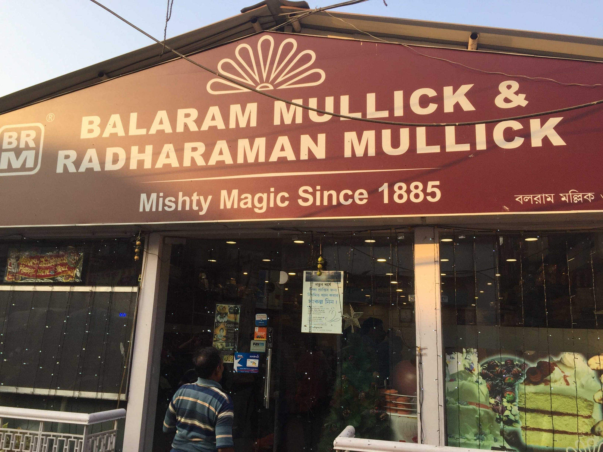
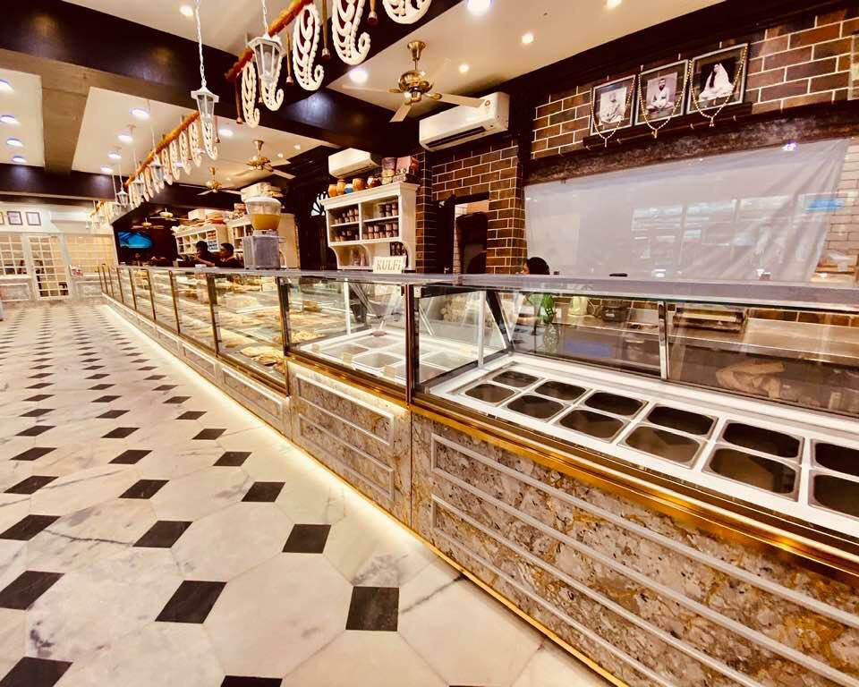

Baked Roshogolla From Ballaram Mullick & Radharaman Mullick:
Bengalis view food as more than just a source of sustenance, and Bengalis have been known to consume sweets after meals
since the British occupied India in the 18th century. Ganesh Chandra Mullick opened his confectionary in the city of joy
in 1885 under the name Ganesh Mishtanno Bhandar. Mr. Sudip Mullick, a passionate chocolatier and a vital member of the
renowned Balaram Mulick and Radharaman Mullick sweet business, reflects on the past.

The store was given the name Balaram Mullick in the 1960s. To change the name, my father Pradip Mullick took the initiative.
Sudip Mullick, a pioneer in this industry, makes this statement. Since he took over the company, he has developed new
techniques for fusing traditional sweet preparation with contemporary palates, which has completely changed how the brand
makes its sweetmeats.
 One of their best items is Baked Roshogolla.
A great Bengali dessert is baked roshogolla. The ingredients for this delicious delicacy include roshogollas, milk, condensed milk,
khoya, cardamom, and a few pistachios. No amount of gourmet terms can adequately describe how exquisite it tastes.
If we had to sum up its flavor, it was a lovely combination of roshogolla, roshomalai, shahi tukda, and caramel.
Simply divine.
The slightly charred roshogolla top with soft insides,combined with caramelized milk is a match made in heaven.
One of their best items is Baked Roshogolla.
A great Bengali dessert is baked roshogolla. The ingredients for this delicious delicacy include roshogollas, milk, condensed milk,
khoya, cardamom, and a few pistachios. No amount of gourmet terms can adequately describe how exquisite it tastes.
If we had to sum up its flavor, it was a lovely combination of roshogolla, roshomalai, shahi tukda, and caramel.
Simply divine.
The slightly charred roshogolla top with soft insides,combined with caramelized milk is a match made in heaven.